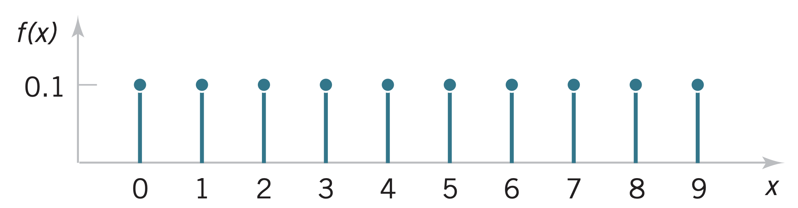

A random variable \(X\) has a discrete uniform distribution if each of the \(n\) values in its range, \(x_1\), \(x_2\), …, \(x_n\) has equal probability \[f(x_i) = \dfrac{1}{n}\]
\(X\) with values in \(R=\{0,1,2,...,9\}\)
 \[f(x)=0.1\]
If \(X\) is a discrete uniform variable with integer values \(a\), \(a+1\), …, \(b\) for \(a \leq b\), then \[\mu=E(X)=\dfrac{b+a}{2}\] \[\sigma^2=\dfrac{(b-a+1)^2-1}{12}\]
\[f(x) = \binom{n}{x} p^x (1-p)^{n-x}\]
\[\binom{n}{x} = \dfrac{n!}{x!(n-x)!}\]
The CDF of the binomial distribution is \[F(x) = \sum_{k=0}^{x} \binom{n}{k} p^k (1-p)^{n-k}\]
Each water sample has 10% chance of containing a pollutant. What is the probability that the next 18 samples, exactly 2 will contain the pollutant?
Determine the probability that at least 4 samples contain the pollutant.
If \(X\) is a binomial variable with parameters \(p\) and \(n\), then \[\mu=E(X)=np\] \[\sigma^2=V(X)=np(1-p)\]
In a series of Bernoulli trials, the random variable \(X\) that equals the number of trials until the first success is a geometric random variable with parameter \(0 < p < 1\) and \[f(x)=(1-p)^{x-1}p\]
Return period is the mean recurrence time between two occurrences, and is given by \[\overline{T} = \dfrac{1}{p}\]
https://www.vox.com/science-and-health/2017/8/28/16211392/100-500-year-flood-meaning
If \(X\) is a geometric random variable with parameter \(p\), then \[\mu=E(X)=\dfrac{1}{p}\] \[\sigma^2=V(X)=\dfrac{1-p}{p^2}\]
A generalization of the geometric distribution where the random variable \(X\) describes the number of Bernoulli trials required to obtain \(r\) successes
In a series of Bernoulli trials (independent trials with constant probability \(p\) of a success), the random variable \(X\) that equals the number of trials until \(r\) successes occur is a negative binomial random variable with parameters \(0 < p < 1\) and $r = 1, 2, 3, …$ \[f(x) = \binom{x-1}{r-1}(1-p)^{x-r}p^r\] where $x=r,r+1,r+2,…$
If \(X\) is a negative binomial random variable with parameters \(p\) and \(r\), then \[\mu=E(X)=\dfrac{r}{p}\] \[\sigma^2=V(X)=\dfrac{r(1-p)}{p^2}\]
A fixed offshore platform is designed for a wave height of 8 m above the mean sea level. This wave height corresponds to a 5% probability of being exceeded per year.
What is the probability that the platform will be subjected to the design height within the return period?
What is the probability that the first exceedance of the design height will occur after year 3?
If the first exceedance of the design height occurs after year 3, what is the probability that it will occur in year 5?
The code for the design of a building in a coastal region specifies the 50-yr wind as the "design wind". What is the probability that a newly completed building is subjected to the design wind for the first time on the fifth year after completion?
What is the probability that it is subjected within 5 years after completion?
What is the probability that it is subjected to the design wind for the third time 10 years after completion?
Homework #3 due 7 Oct!